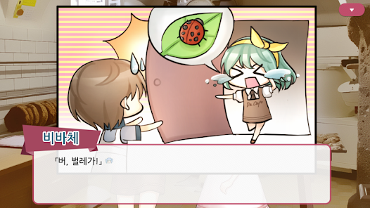
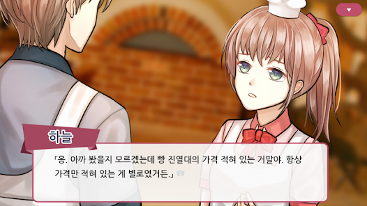
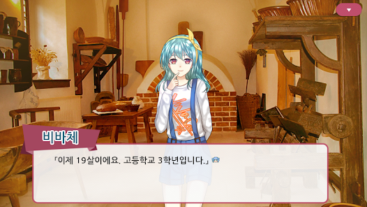

프로젝트 12 · 2017.10.02 발매
칸타빌레 레시피
두루뫼 시의 한구석, 주인을 잃고 멈춰버린 빵집 '다 카포'.
서툰 손길로 구워내는 인생의 새로운 선율.
개요
두루뫼 시의 한구석, 주인을 잃고 멈춰버린 빵집 '다 카포' 벼랑 끝에 몰린 도망자에서, 운명처럼 이곳의 점장이 된 한 소년의 이야기. 서툰 손길로 구워내는 새로운 선율. 모든 것이 낯선 경영의 현장 속에서 당신만의 아르바이트생을 모집하고, 다시 시작되는 '다 카포'의 따뜻한 온기를 지금 바로 채워보세요.
게임 소개
도망자에서 점장으로, 그리고 다시 시작되는 이야기.

생계형 도둑에서 하루아침에 점장으로
빚을 피해 도망치던 중 우연히 들어선 두루뫼 시의 수상한 가게. 굶주림에 못 이겨 빵을 훔치다 들킨 주인공 하늘은, 예상치 못한 제안을 받고 얼떨결에 가게의 운영을 맡게 됩니다.

좌충우돌 아르바이트생
제빵 지식도, 서빙 경험도 없는 초보 점장에게 닥친 난관. 빵을 만들 줄 아는 제빵사 렌토를 시작으로, 가게를 정상화하기 위해 개성 넘치는 아르바이트생들을 모집합니다.

생각보다 어려운, 그래서 더 즐거운 경영
단순한 운영을 넘어 예상치 못한 사건들이 가게 안팎에서 벌어집니다. 렌토를 중심으로 다양한 아르바이트생들과 함께 '다 카포'를 운영해보세요.
캐릭터
'다 카포'에 모여드는 인물들.

하늘
본작의 주인공. 친구의 보증을 서줬다가 빚쟁이들에게 쫓겨 두루뫼 시까지 도망친 도망자. 굶주림에 못 이겨 빵을 훔치다 수상한 마법사에게 빵집 '다 카포'를 넘겨받고 얼떨결에 점장이 된다.
렌토
'다 카포'의 첫 아르바이트생. 밥솥으로 빵을 만든 것이 계기가 되어 제빵을 시작한 학생. 독학이라 마카롱과 츄러스는 아직 잘 못 만듭니다.
비바체
수시 합격자 고3. 접객에 자신 있다며 찾아온 밝고 당찬 아르바이트생. 하루 지나면 버려지는 빵으로 시식 행사를 뛰는 등, 가게를 위해 자발적으로 나서는 마케팅 담당.
포르테
근처 빵집 '코다'를 운영하는 사장. '다 카포'에 종종 찾아와 조언을 건네며, 남은 빵 활용 레시피를 알려준다.
모토
새벽 4시마다 '다 카포'에 식재료를 배달하는 납품업자. 리어카를 끌고 가게를 돌며 재료를 전달합니다.
지금 플레이하세요
다시 시작되는 '다 카포'의 따뜻한 온기를 지금 바로 채워보세요.